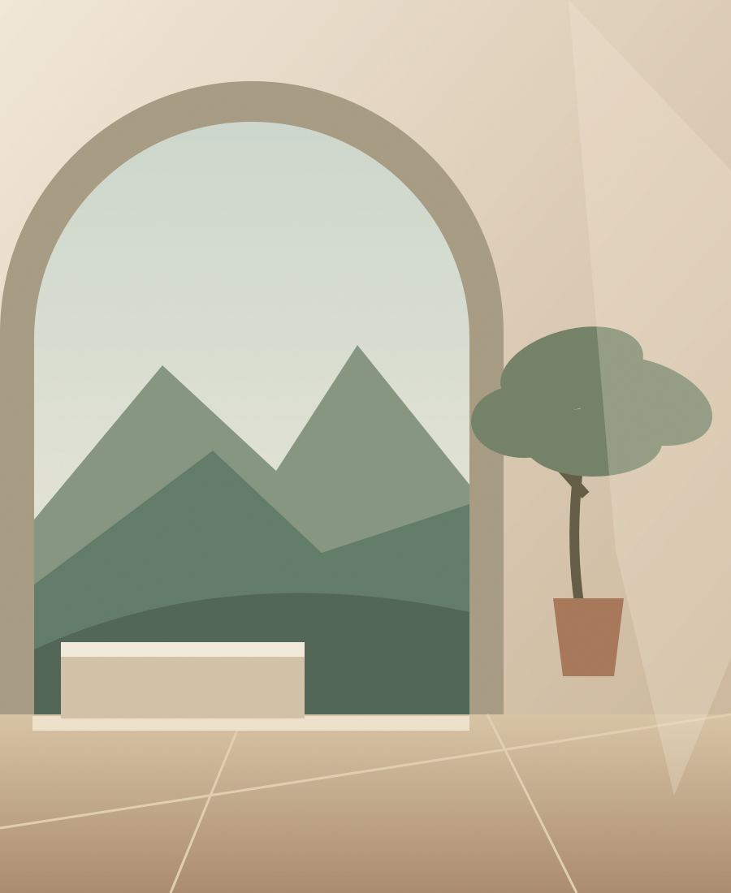
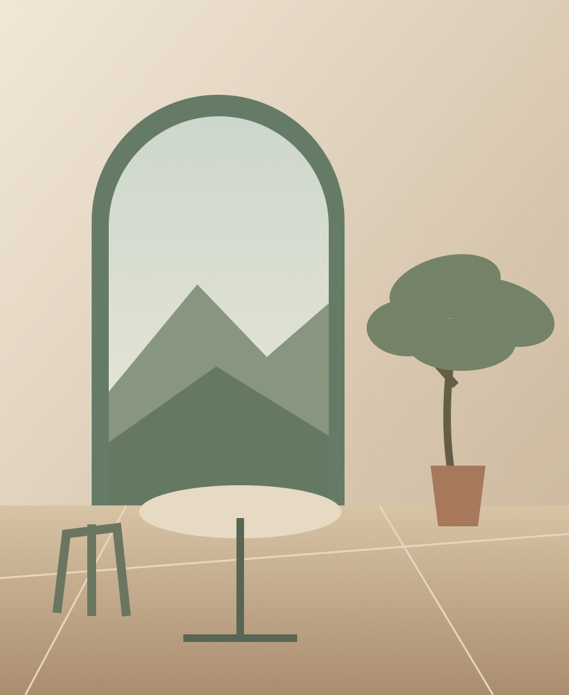
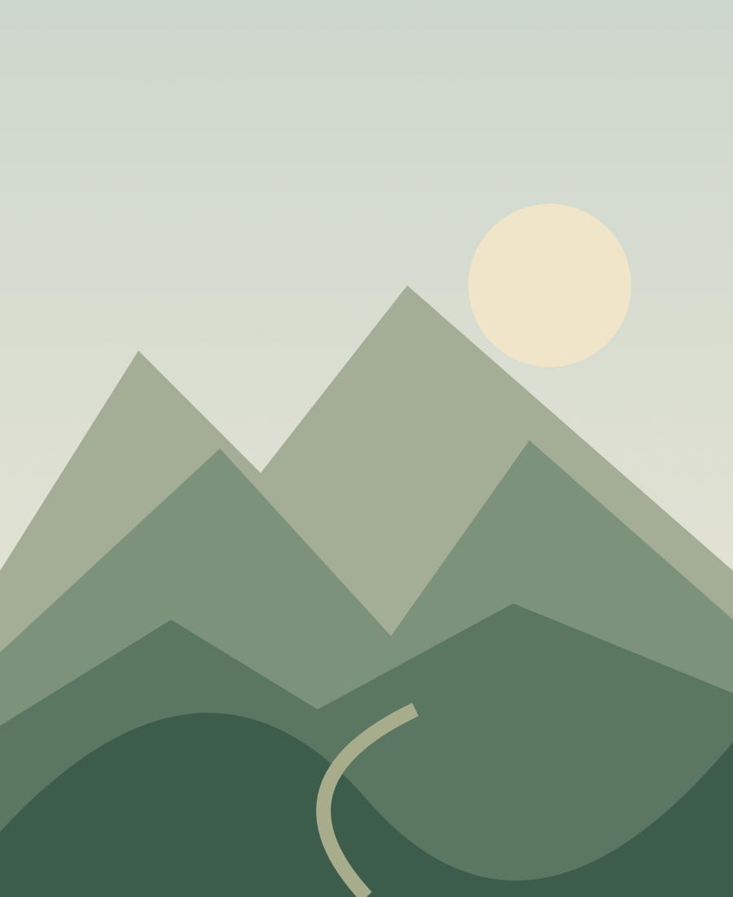
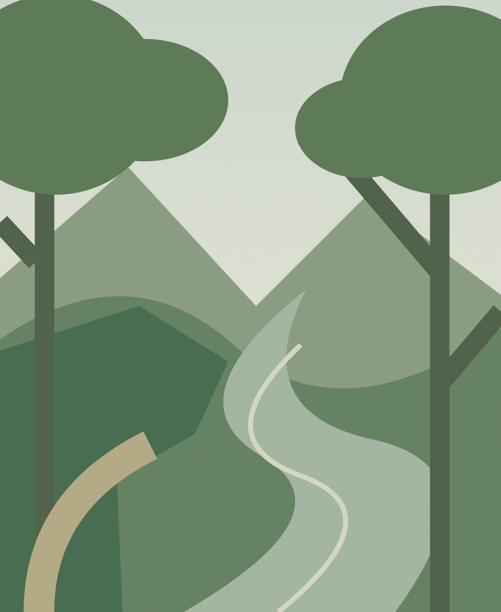

Seguir el curso del río
La ruta del río Majaceite invita a descubrir el entorno a pie. Consulta el estado del sendero y las condiciones de acceso antes de salir.
EL BOSQUE · SIERRA DE CÁDIZ
Descubre tu refugio rural en El Bosque. Naturaleza, tranquilidad y momentos para compartir.
RESPIRA. YA ESTÁS MÁS CERCA.

Ilustración provisional · no representa la casa01 / BIENVENIDOS A CASA
Hay escapadas que empiezan al cerrar la puerta y dejar las prisas fuera. La Casita de El Bosque es una vivienda rural de alquiler completo en El Bosque, un punto de partida para disfrutar de la Sierra de Cádiz a tu ritmo.
Espacio para descansar, reunirse alrededor de la mesa y compartir unos días en familia o con amigos. Sin más planes que los que te apetezcan.
02 / DESCUBRE LOS ESPACIOS
Rincones para encontrarse.
Y otros para no hacer nada.
Las siguientes ilustraciones son placeholders conceptuales. Las fotografías reales de cada espacio están pendientes de autorización y sustitución.
03 / LOS PEQUEÑOS DETALLES
La comodidad de una casa, con la sierra como destino.
Servicios publicados pendientes de validación con la propiedad. Confirma las condiciones de mascotas y las fechas de apertura de la piscina antes de reservar.

MENOS RELOJ. MÁS MOMENTOS.
Un café tranquilo, una mañana en la sierra y tiempo para disfrutar de lo que realmente importa.
04 / DESCUBRE EL BOSQUE
El Bosque y la Sierra de Grazalema.
Un destino para explorar con calma.

La ruta del río Majaceite invita a descubrir el entorno a pie. Consulta el estado del sendero y las condiciones de acceso antes de salir.
Senderismo, paisajes de montaña y ese ritmo distinto que se encuentra en la Sierra de Grazalema.
Calles para pasear sin prisa y rincones que forman parte del carácter de la Sierra de Cádiz.
Acércate a la gastronomía local y haz de cada comida una parte de la escapada.
Ideas para disfrutar del destino por tu cuenta. El alojamiento no ofrece actividades organizadas en esta propuesta.
05 / NOS ENCONTRAMOS AQUÍ
HAZLE SITIO A LO QUE IMPORTA
Consulta disponibilidad y empieza a preparar unos días
de descanso en la Sierra de Cádiz.